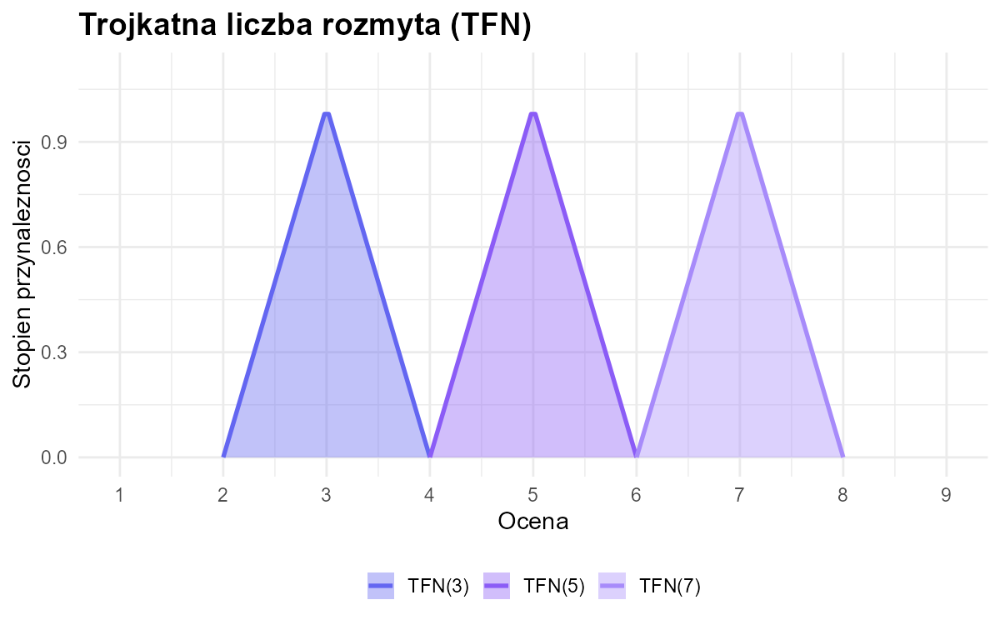
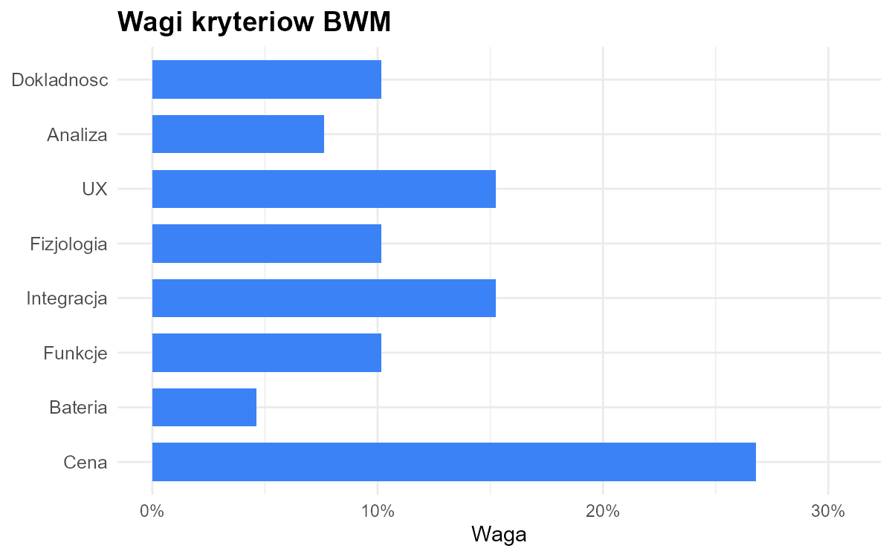
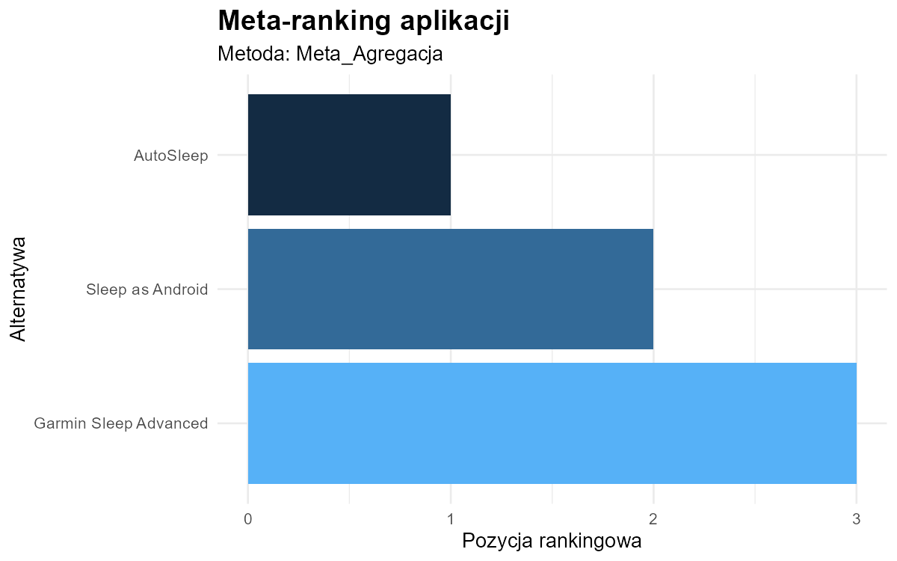

Coraz więcej studentów korzysta z aplikacji monitorujących sen, aby poprawić jakość odpoczynku, kontrolować nawyki związane ze snem oraz lepiej radzić sobie ze stresem i zmęczeniem. Duża liczba dostępnych aplikacji oraz różnorodność oferowanych funkcji sprawiają jednak, że wybór odpowiedniego rozwiązania często bywa trudny.
Pakiet DreamySleepR jest prostym narzędziem analitycznym umożliwiającym ocenę i ranking aplikacji do monitorowania snu z wykorzystaniem metod wielokryterialnego wspomagania decyzji.
Pakiet umożliwia ocenę i porównanie aplikacji według wielu kryteriów.
Narzędzie przeznaczone dla studentów oraz użytkowników zainteresowanych poprawą jakości snu.
Końcowym efektem jest ranking aplikacji oraz meta-ranking metod MCDA.
Poniżej zamieszczono przykładowe dane wejściowe wykorzystywane przez pakiet DreamySleepR.
Analizowane alternatywy reprezentują aplikacje do monitorowania snu. Uwzględniono kryteria takie jak dokładność pomiaru snu, analiza statystyk, łatwość obsługi, integracja z urządzeniami czy zużycie baterii.
| Ekspert | Aplikacja | Dokładność faz snu | Analiza statystyk | Łatwość obsługi | Dane fizjologiczne | Integracja z urządzeniami | Funkcje dodatkowe | Zużycie baterii | Cena / subskrypcja |
|---|---|---|---|---|---|---|---|---|---|
| 1 | AutoSleep | 6 | 7 | 8 | 6 | 6 | 6 | 9 | 2 |
| 2 | AutoSleep | 1 | 7 | 6 | 7 | 8 | 5 | 9 | 9 |
| 3 | AutoSleep | 9 | 9 | 7 | 9 | 6 | 8 | 5 | 9 |
| 4 | AutoSleep | 9 | 9 | 9 | 2 | 3 | 8 | 5 | 1 |
| 5 | AutoSleep | 1 | 8 | 9 | 9 | 8 | 8 | 2 | 1 |
| 6 | AutoSleep | 8 | 7 | 9 | 4 | 8 | 9 | 1 | 3 |
| 7 | AutoSleep | 9 | 4 | 7 | 8 | 5 | 8 | 3 | 9 |
| 8 | AutoSleep | 7 | 7 | 9 | 9 | 7 | 9 | 2 | 4 |
| 9 | AutoSleep | 9 | 6 | 5 | 3 | 6 | 9 | 1 | 3 |
| 10 | AutoSleep | 2 | 9 | 9 | 6 | 9 | 6 | 4 | 4 |
| 11 | AutoSleep | 8 | 5 | 9 | 6 | 9 | 5 | 1 | 1 |
| 12 | AutoSleep | 6 | 5 | 7 | 7 | 6 | 7 | 3 | 2 |
| 13 | AutoSleep | 9 | 7 | 9 | 3 | 7 | 7 | 4 | 1 |
| 14 | AutoSleep | 7 | 7 | 8 | 3 | 6 | 8 | 1 | 6 |
| 15 | AutoSleep | 9 | 8 | 9 | 6 | 8 | 6 | 3 | 1 |
| 1 | Sleep as Android | 9 | 8 | 6 | 6 | 6 | 5 | 9 | 9 |
| 2 | Sleep as Android | 3 | 5 | 3 | 5 | 5 | 7 | 5 | 3 |
| 3 | Sleep as Android | 7 | 1 | 1 | 5 | 5 | 5 | 5 | 3 |
| 4 | Sleep as Android | 9 | 9 | 7 | 8 | 1 | 4 | 4 | 4 |
| 5 | Sleep as Android | 7 | 9 | 1 | 4 | 5 | 1 | 4 | 7 |
| 6 | Sleep as Android | 9 | 6 | 9 | 3 | 3 | 9 | 6 | 4 |
| 7 | Sleep as Android | 9 | 3 | 4 | 8 | 1 | 4 | 4 | 6 |
| 8 | Sleep as Android | 8 | 9 | 6 | 3 | 6 | 7 | 2 | 7 |
| 9 | Sleep as Android | 7 | 1 | 7 | 4 | 4 | 5 | 4 | 9 |
| 10 | Sleep as Android | 9 | 3 | 6 | 5 | 9 | 5 | 4 | 1 |
| 11 | Sleep as Android | 8 | 5 | 5 | 6 | 2 | 3 | 2 | 8 |
| 12 | Sleep as Android | 9 | 9 | 4 | 9 | 5 | 8 | 1 | 5 |
| 13 | Sleep as Android | 8 | 4 | 6 | 5 | 4 | 7 | 9 | 6 |
| 14 | Sleep as Android | 7 | 5 | 6 | 6 | 3 | 3 | 5 | 5 |
| 15 | Sleep as Android | 2 | 7 | 4 | 6 | 2 | 9 | 9 | 4 |
| 1 | Garmin Sleep Advanced | 5 | 1 | 9 | 8 | 6 | 6 | 9 | 7 |
| 2 | Garmin Sleep Advanced | 6 | 2 | 6 | 4 | 9 | 3 | 9 | 9 |
| 3 | Garmin Sleep Advanced | 3 | 7 | 2 | 9 | 8 | 5 | 5 | 9 |
| 4 | Garmin Sleep Advanced | 5 | 5 | 4 | 9 | 8 | 4 | 9 | 9 |
| 5 | Garmin Sleep Advanced | 1 | 4 | 9 | 4 | 8 | 2 | 7 | 9 |
| 6 | Garmin Sleep Advanced | 9 | 5 | 5 | 3 | 1 | 9 | 9 | 2 |
| 7 | Garmin Sleep Advanced | 6 | 4 | 9 | 2 | 9 | 1 | 6 | 7 |
| 8 | Garmin Sleep Advanced | 9 | 3 | 9 | 9 | 9 | 5 | 9 | 7 |
| 9 | Garmin Sleep Advanced | 4 | 4 | 5 | 3 | 9 | 7 | 6 | 7 |
| 10 | Garmin Sleep Advanced | 9 | 5 | 9 | 5 | 9 | 3 | 7 | 4 |
| 11 | Garmin Sleep Advanced | 9 | 4 | 9 | 3 | 8 | 6 | 7 | 6 |
| 12 | Garmin Sleep Advanced | 4 | 1 | 2 | 3 | 4 | 9 | 6 | 7 |
| 13 | Garmin Sleep Advanced | 9 | 4 | 5 | 4 | 9 | 1 | 9 | 7 |
| 14 | Garmin Sleep Advanced | 9 | 5 | 5 | 4 | 6 | 2 | 7 | 9 |
| 15 | Garmin Sleep Advanced | 5 | 5 | 4 | 9 | 9 | 3 | 9 | 5 |
W pakiecie DreamySleepR zastosowano trójkątne liczby rozmyte (TFN – Triangular Fuzzy Numbers), które umożliwiają uwzględnienie niepewności ocen użytkowników.
Jeżeli użytkownik oceni aplikację na 6, rzeczywista ocena może być nieco niższa lub wyższa.

Wagi kryteriów zostały wyznaczone metodą Best-Worst Method (BWM).
W przykładowej analizie za najważniejsze kryterium uznano cenę/subskrypcję, a także łatwość obsługi (UX) i integrację z urządzeniami.
10.2%
7.6%
15.2%
10.2%
15.2%
10.2%
4.6%
26.8%

Pakiet wykorzystuje metody Fuzzy TOPSIS, Fuzzy VIKOR oraz Fuzzy MULTIMOORA.
Meta-ranking agreguje wyniki wszystkich metod i wskazuje najbardziej rekomendowaną aplikację.
AutoSleep
Tak
| Miejsce w meta-rankingu | Aplikacja | Metoda TOPSIS | Metoda VIKOR | Metoda MULTIMOORA |
|---|---|---|---|---|
| 1 | AutoSleep | 1 | 1 | 1 |
| 2 | Sleep as Android | 2 | 2 | 2 |
| 3 | Garmin Sleep Advanced | 3 | 3 | 3 |

Poniższa instrukcja przeprowadza użytkownika przez pełną analizę z wykorzystaniem demonstracyjnego zbioru danych.
data("mcda_dane_surowe")
dane_rozmyte <- przygotuj_dane_mcda(
dane = mcda_dane_surowe,
skladnia = "
Dokladnosc =~ dokladnosc_faz_snu;
Analiza =~ analiza_statystyk;
UX =~ ux_latwosc;
Fizjologia =~ dane_fizjologiczne;
Integracja =~ integracja_urzadzenia;
Funkcje =~ funkcje_dodatkowe;
Bateria =~ zuzycie_baterii;
Cena =~ cena_subskrypcja
",
kolumna_alternatyw = "Aplikacja"
)
macierz <- as.matrix(dane_rozmyte)
typy <- c(
"max", "max", "max", "max",
"max", "max", "min", "min"
)
wynik <- rozmyty_meta_ranking(
macierz_decyzyjna = macierz,
typy_kryteriow = typy,
bwm_kryteria = c("Dokladnosc", "Analiza", "UX", "Fizjologia", "Integracja", "Funkcje", "Bateria", "Cena"),
bwm_najlepsze = c(1, 2, 3, 2, 2, 2, 4, 5),
bwm_najgorsze = c(5, 4, 3, 4, 4, 4, 2, 1)
)
print(wynik$porownanie)